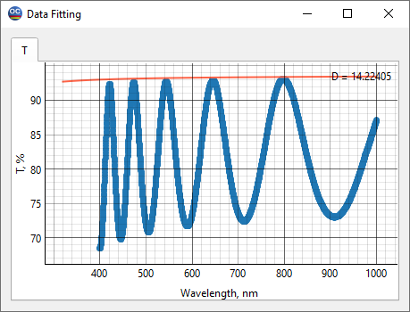
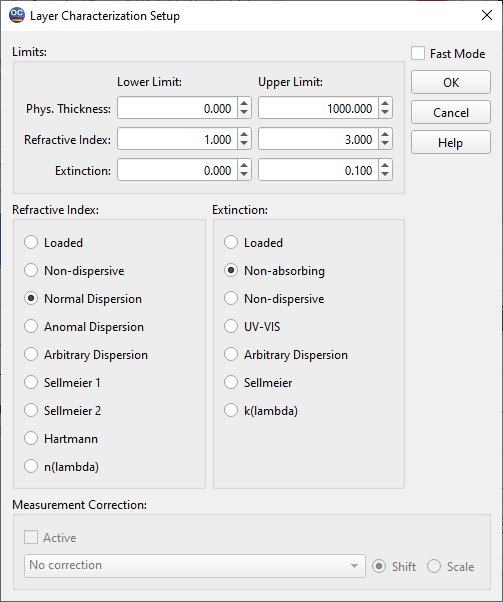
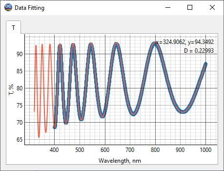
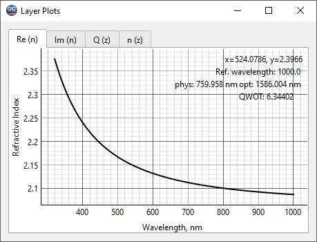
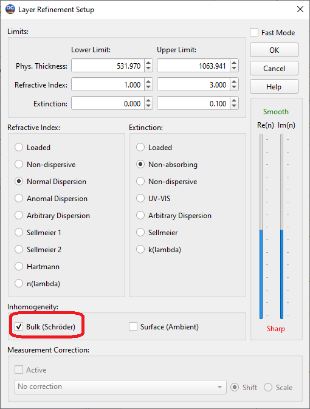
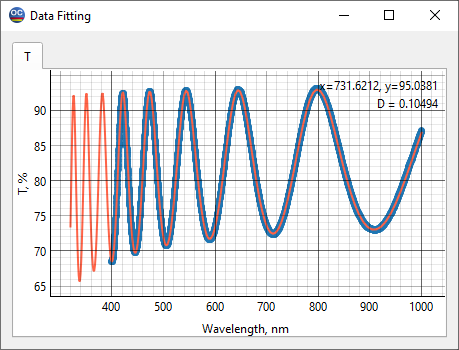
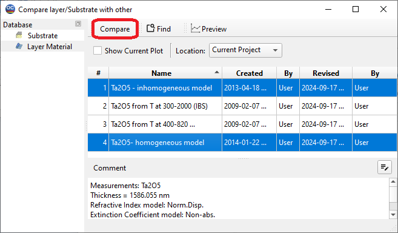
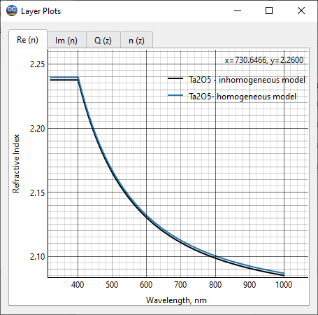
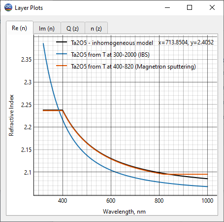

LEC24C2 – Verification of characterization results – Ta2O5 film is used as an example
Note: For introduction to the basics of characterization theory, we recommend the book by A. Tikhonravov, Optical coatings: design, characterization, monitoring, SPIE Press, 2024
The main purpose of this example is to demonstrate an approach to verify the wavelength dependence of the refractive index determined during thin film characterization. Ta2O5 film deposited on a Suprasil substrate using the IBS process is used as an example.
In the File -> Project menu of OptiChar, open the directory LEC24C2. The datafiles needed to run this exercise are already loaded into RAM. These are the SUPRACIL substrate and the measurement datafile Ta2O5 – T data. Open the Data Fitting option in the View menu. The dense set of dots in this window shows measured transmittance data, and the solid curve represents the reflectance from the uncoated SUPRACIL substrate. Substrate thickness is specified in the line Substrate thickness of the General Information window.

As with the LEC24C1 example, there are useful theoretical facts that are important for choosing a layer model for characterization using spectral transmittance data.
If the film is non-absorbing, has no bulk inhomogeneity across the film thickness, and its refractive index is higher than the refractive index of the substrate, then the measured transmittance maxima should coincide with the transmittance of the uncoated substrate.
If the film has bulk inhomogeneity, then the transmittance maxima will be shifted relative to the transmittance of the uncoated substrate.
In the Data Fitting window we see that the transmittance maxima are shifted downwards relative to the transmittance of the uncoated substrate. In principle, the downward shift of T spectral data can be related to absorption in the film. However, it is well known that Ta2O5 films do not absorb in the spectral range under consideration. Thus, the observed shift should be attributed to the film inhomogeneity.
As usual, we start our investigation using the Layer Characterization menu option and choosing a model of a homogeneous thin film. Let’s choose the Normal Dispersion (three-parameter Cauchy model) for the refractive index and Non-absorbing model in the Extinction field.

Click OK to start the characterization procedure. The results are displayed in the Data Fitting and Layer Plots windows. The Data Fitting window shows the deviations in the model transmittance (solid curve) from the measured data which were expected. The refractive index of the Ta2O5 film found in the frame of the homogeneous model is stored in the Layer material database under the name Ta2O5 – homogeneous model.
 
Let us move on to the Layer Refinement option of the Characterization menu and check the Bulk checkbox in the lower left part of the window. The bulk inhomogeneity will be searched for within the framework of the Schroeder’s model assuming a liner change in the refractive index of the film from its back boundary to the front boundary.

Click OK to start the refinement procedure. The results displayed in the Data Fitting window show a better match to the measured data than before. The refractive index of the Ta2O5 film found in the frame of the inhomogeneous model is stored in the Layer material database under the name Ta2O5 – inhomogeneous model. The degree of inhomogeneity is positive, which means that the refractive index increases from the back boundary of the film to the front boundary.

First of all, let us compare the refractive indices found within the homogeneous and inhomogeneous film models. To do this, go to the Compare Index Plots option in the View menu. Select the Ta2O5 – homogeneous model and Ta2O5 – inhomogeneous model files and click the Compare tab.

The difference in the found refractive index values is not very significant, it is about 0.2-0.3 %. However, the refractive index wavelength dependence found within the inhomogeneous model should be considered more reliable. Next, we will compare it with other reliable results for the refractive index of Ta2O5 films.

The Layer material database contains the Ta2O5 from T at 300-2000 (IBS) and Ta2O5 from T at 400-820 (Magnetron sputtering) files. These are well-trusted results from the paper by A. Tikhonravov et al., Optical parameters of oxide films typically used in optical coating production. Appl. Opt., 2011, vol. 50, no. 9, pp. C75-C85. Using the Compare Index Plots option, compare these results with the Ta2O5 – inhomogeneous model file. The difference between our result and the result obtained for the magnetron sputtered film is almost indistinguishable. The refractive index of the IBS film from the cited paper is shifted downwards relative to our result by about 1%. Note that such difference in the results for the films of the same material produced using the same deposition processes is quite possible. The refractive index value is directly related to the density of the amorphous dielectric film, and the film density can vary depending on the parameters of the deposition process.

Based on physical considerations, one would only expect an upward or downward shift of the refractive index wavelength dependencies, as observed in the Data Fitting window. In the case of dielectric films and spectral ranges where these films have negligible absorption, there is no physical reasons for a tilt of one refractive index wavelength dependence relative to another dependence found for the same material under different deposition conditions. This fact is important for comparative verification of characterization results. If such a tilt is observed relative to well-established results, then the accuracy of the measured data and the consistency of the film model used should be checked.